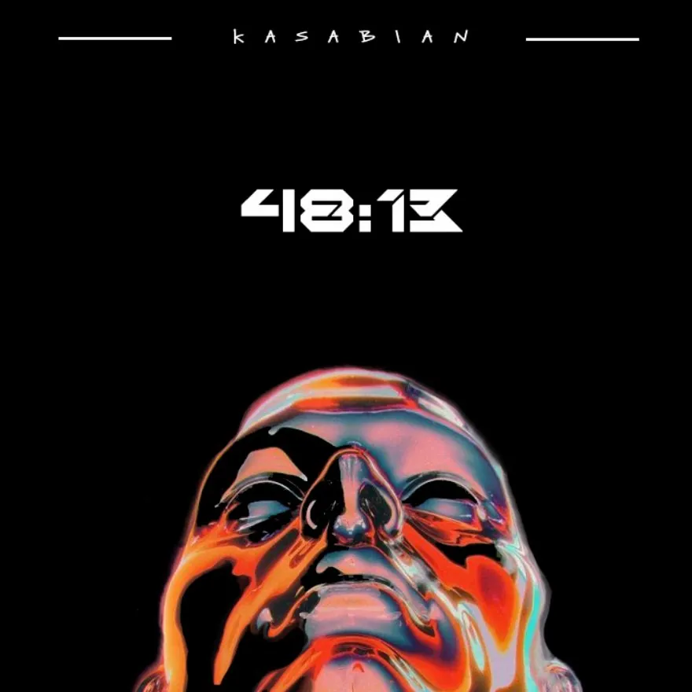
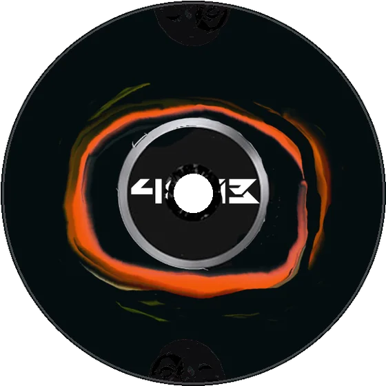

Case study · Packaging musicale · CD e libretto
Kasabian 48:13
Restyling dell'album 48:13 dei Kasabian: copertina, retro, disco e libretto. Ho tradotto il suono rock, elettronico e psichedelico in un volto che si fonde e in una tipografia tagliente.
- Ruolo
- Art direction, illustrazione, tipografia, packaging
- Progetto
- Restyling (progetto di studio)
- Consegne
- Copertina, retro, disco, libretto, custodia

01
Prima e dopo
A sinistra l'edizione deluxe originale. A destra la mia versione: nero, un volto arancio e il titolo tagliato come una lama.


02
Copertina e retro
Il volto occupa tutto il fronte; sul retro, la tracklist con la stessa tipografia tagliente.


03
Il disco
L'anello arancio del volto torna sul disco, attorno al titolo.

04
Custodia e libretto


48:13